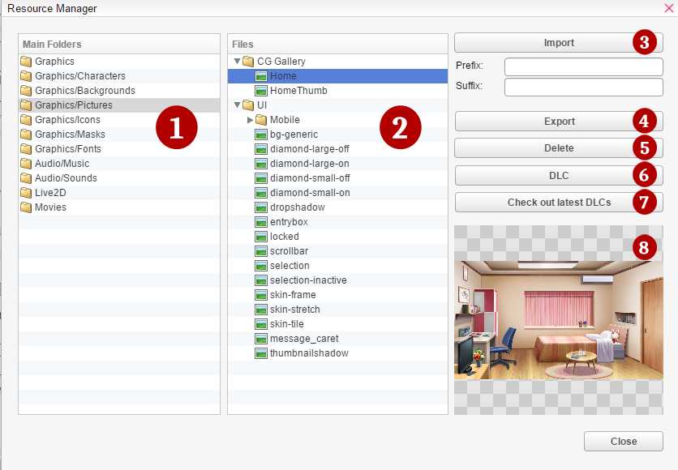

资源管理器
Visual
Novel Maker 允许您导入自己的资源。只需按下
资源管理器 ( ) 图标，在工具栏中。
) 图标，在工具栏中。
所有资源都必须在资源管理器中进行管理。资源可以在此窗口中导入（加载到项目中）、导出（写入文件）或删除。

(1) 主文件夹
包含所有游戏文件的文件夹。
有关接受的文件类型的更多信息，请参阅资源标准。| 角色 | 用于角色的文件。 |
| 背景 | 用于背景的文件。 |
| 图片 | 用于 CG、动画、系统、图片和 UI 的文件。 |
| 图标 | 用于图标的文件，例如语言选择。 |
| 蒙版 | 用于蒙版的图像。 |
字体 |
用于字体的文件。 |
音乐 |
用于音乐的文件。 |
声音 |
用于音效的文件。 |
Live2D |
用于 Live2D 的文件。 |
电影 |
用于电影的文件。 |
(2) 文件
每个文件夹的内容。
(3) 导入
将资源添加到指定的 文件夹。导入资源不需要前缀或后缀。
(4) 导出
创建所选文件的副本并将其保存到其他位置。
您无法导出文件夹， 默认情况下会被忽略。您必须选择要导出的文件。
(5) 删除
删除所选资源。
(6) DLC
直接从 DLC 文件夹导入 资源。
(7) 检查最新的 DLC
打开 Visual Novel Maker DLC 的 Steam 商店页面。
(8) 预览窗口
一个小预览窗口，用于显示 所选文件的内容。您可以双击它以原始 尺寸预览所选图像。
上下文菜单
您可以通过上下文菜单创建新的逻辑组 以及重命名资源。
新组
创建一个具有指定名称的新逻辑组。 组只是一个用于组织目的的逻辑元素，它不是磁盘上的物理文件夹， 因此即使资源在不同的组中，您也不能拥有两个或更多同名资源。
删除
删除所选资源。
属性
打开当前所选资源的属性，允许您 更改资源的名称。